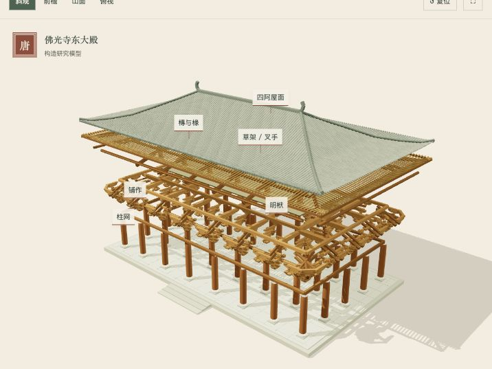
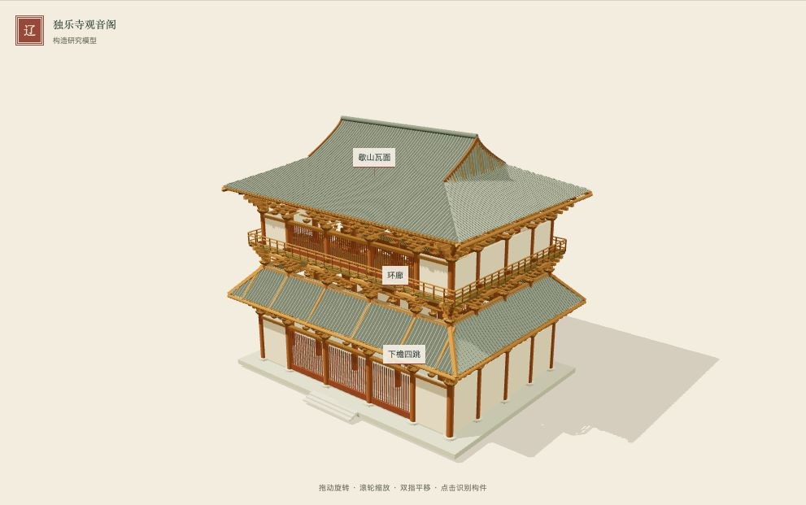
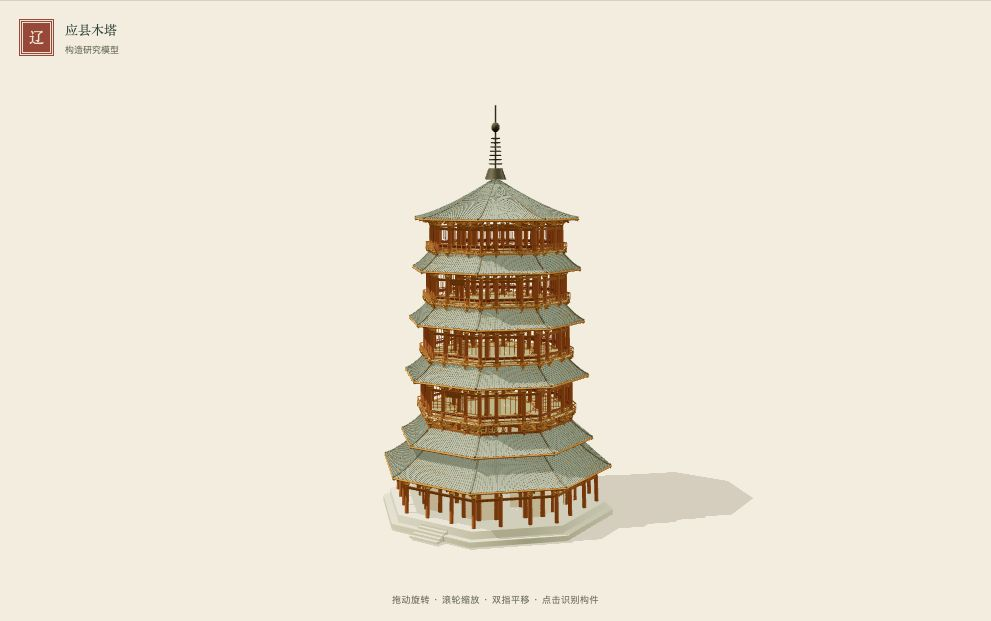
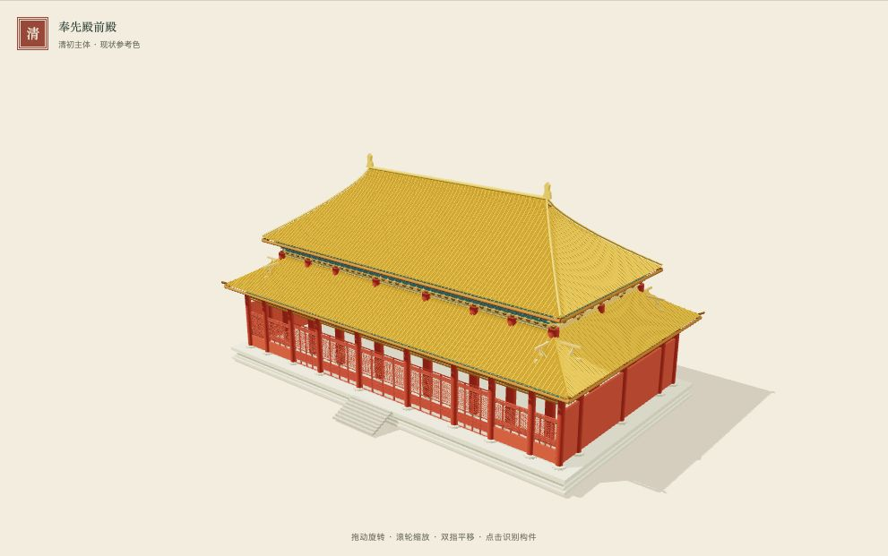
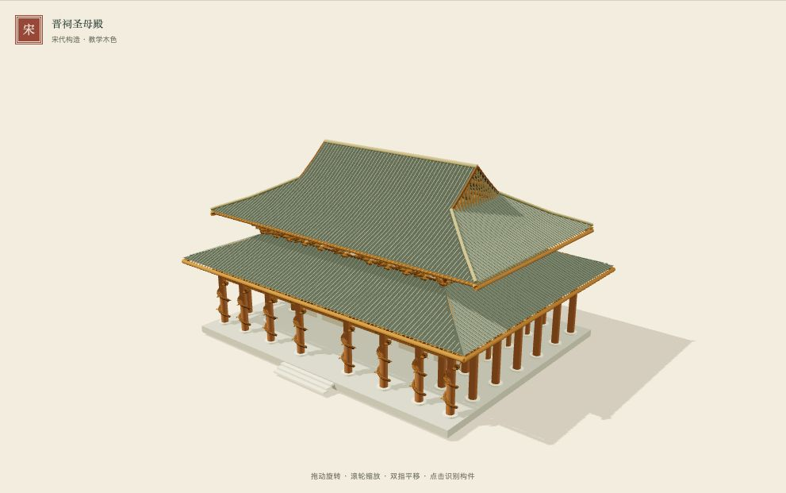
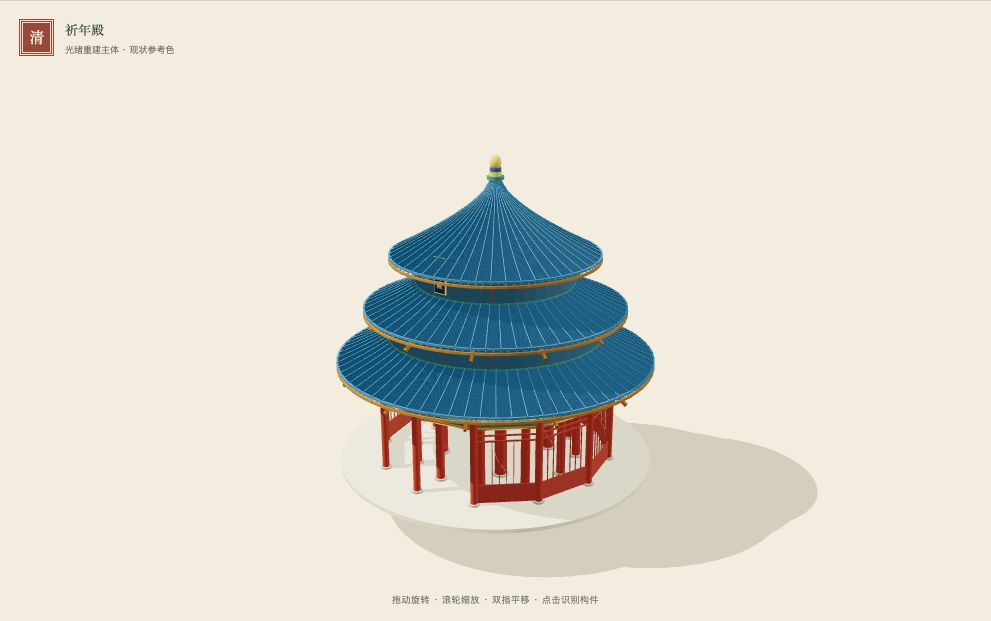
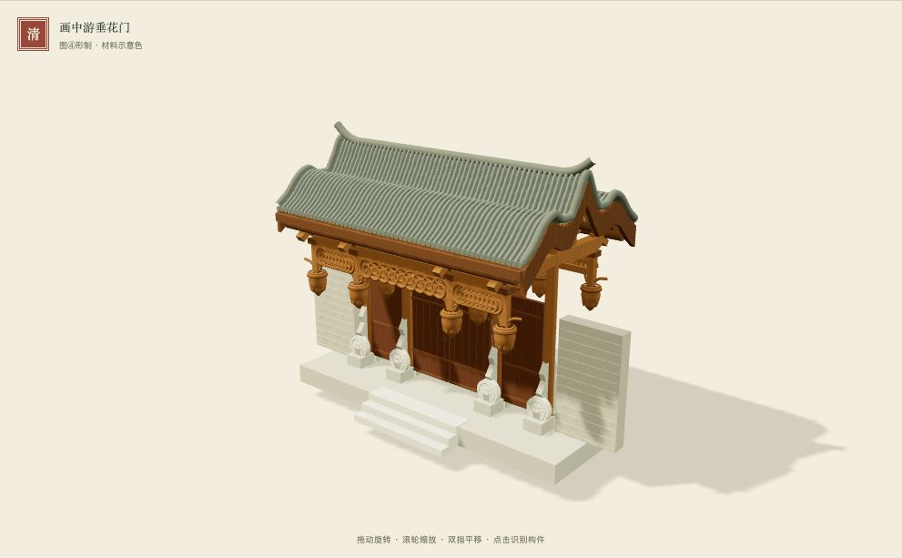
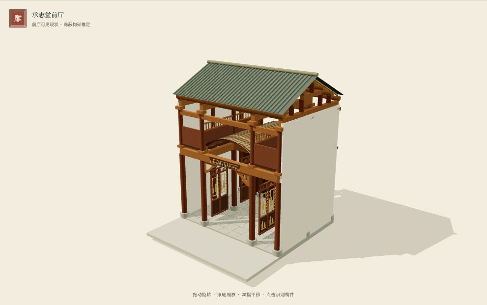
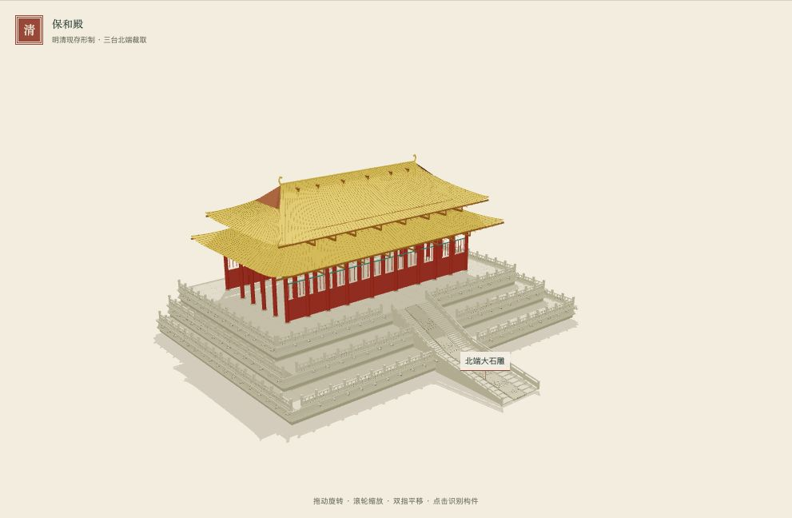

COLLECTION · CHINESE ARCHITECTURE
美轮美奂
中国传统建筑艺术
从一座建筑，读懂一榫一卯。走入殿堂、楼阁与庭院，在旋转、剖切与拆合之间，看见构造如何托起装饰。
浏览卷目 ↓卷目
十卷规划 · 已入藏卷目








COLLECTION · CHINESE ARCHITECTURE
中国传统建筑艺术
从一座建筑，读懂一榫一卯。走入殿堂、楼阁与庭院，在旋转、剖切与拆合之间，看见构造如何托起装饰。
浏览卷目 ↓十卷规划 · 已入藏卷目








